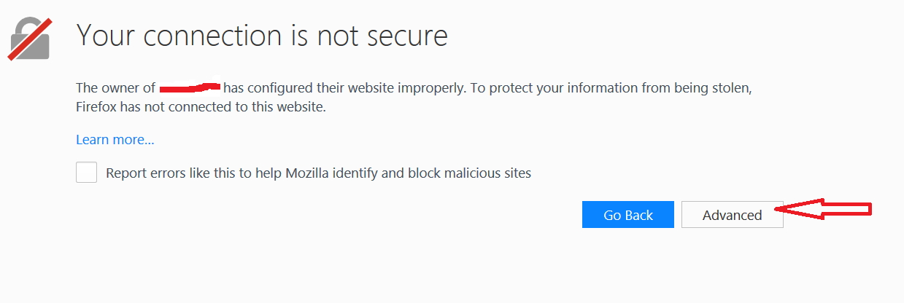

Why do I get a security warning!!.. and how do I fix it?
TurnKey
Linux, creates unique security certificates for each installation
instance.
In doing so, it makes certificates which are "self-signed", and these
will trigger a security alert in modern browsers such as Firefox, which
will block you from the web-pages involved, if you use the https
protocol. Web browser users must make a deliberate decision to trust
these certificates by accepting them, in order to proceed. By
choosing to store the certificate, the browser will not block you in
the future.
See https://www.turnkeylinux.org/blog/ssl-certificates for more discussions on this.
An option exists in the server's ADVANCED MENU page for obtaining proper certificates:
This is the preferred option for a working installation, as it minimises any client difficulties.
For temporary usage, or other limited circumstances, the internal certificates may be safely accepted, stored, and used.
For example, in Firefox :

Select "Advanced"
Then
Select "Add Exception"
Then
Choose to permanently store, and "Confirm"
Other browsers have similar dialogues.